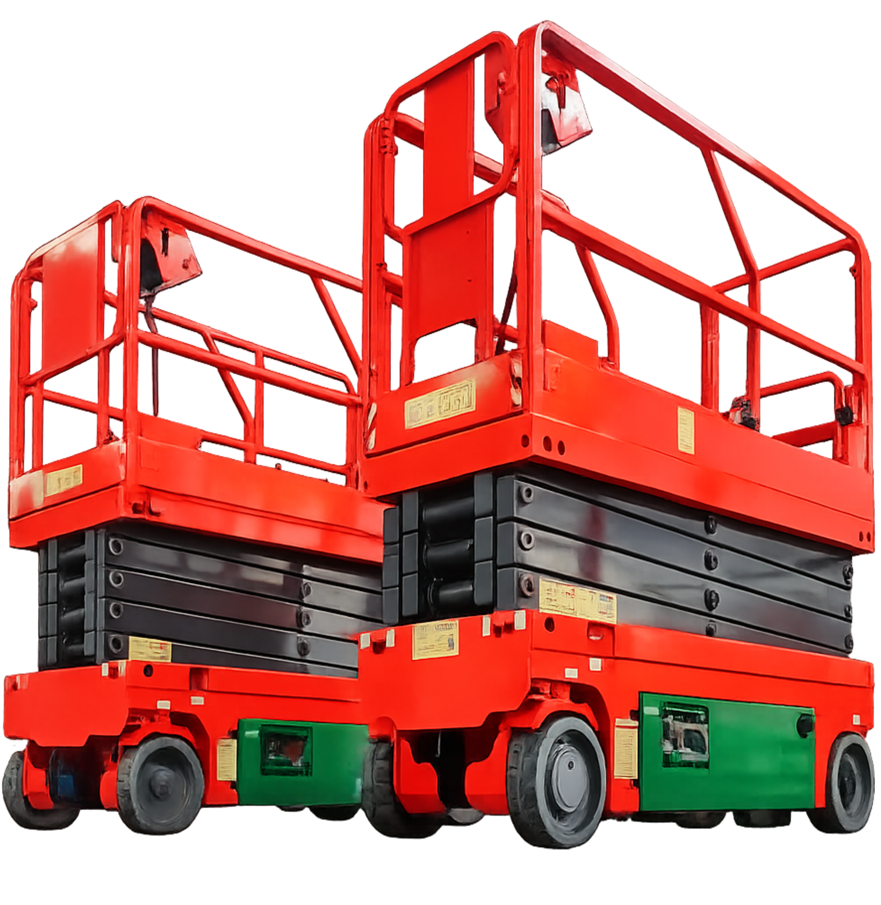

Aluguel de geradores
Locação para eventos, obras, condomínios, empresas e operações temporárias, com orientação para adequar o equipamento à demanda.
Falar sobre aluguelHá mais de 15 anos, a Garra Geradores atende empresas, condomínios, eventos e operações especiais em todo o Rio de Janeiro, com equipe técnica qualificada e suporte 24 horas.
Soluções
A Garra atua com planejamento, dimensionamento e manutenção para manter seus sistemas de energia prontos para uso em situações programadas ou emergenciais.
Locação para eventos, obras, condomínios, empresas e operações temporárias, com orientação para adequar o equipamento à demanda.
Falar sobre aluguelSuporte comercial para escolha de geradores voltados a backup, uso contínuo, expansão de infraestrutura ou projetos específicos.
Falar sobre vendaRotinas programadas para preservar desempenho, reduzir falhas e prolongar a vida útil dos equipamentos.
Agendar manutençãoDiagnóstico técnico e reparos para restabelecer segurança operacional, estabilidade e disponibilidade do sistema.
Solicitar técnicoOperação técnica
Cada atendimento é conduzido com foco em segurança, continuidade e clareza técnica, desde o primeiro contato até a execução em campo.
Análise do local, carga, prazo, aplicação e nível de criticidade da operação.
Orientação para locação, venda ou manutenção com base no cenário informado.
Atuação técnica com suporte 24 horas para demandas programadas ou emergenciais.
Plataforma de elevação
A Garra também oferece solução para trabalhos em altura, com equipamento voltado a operações que exigem alcance, segurança e apoio técnico confiável.
Consultar disponibilidade
Atendimento
Suporte energético para feiras, shows, casamentos, produções, ativações e estruturas temporárias.
Backup para portarias, bombas, áreas comuns, segurança, elevadores e sistemas essenciais.
Continuidade operacional para comércio, escritórios, galpões, indústrias, obras e operações críticas.
Atendimento 24 horas para situações em que a disponibilidade de energia é indispensável.
Serviços realizados


Orçamento via WhatsApp
O formulário direciona pedidos de aluguel para o atendimento de locação. Solicitações de venda e manutenção seguem para o contato técnico/comercial.
Jardim Primavera, Duque de Caxias - RJ, CEP 25215-293